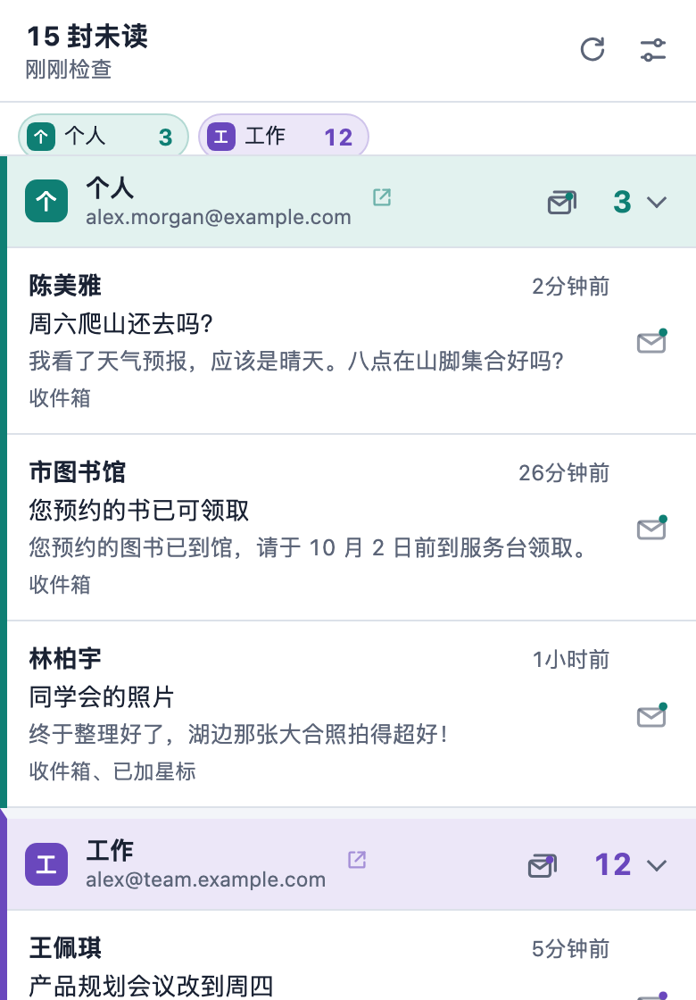

新邮件，
一眼看到。
工具栏显示未读数，并为你在 Chrome 中已登录的每个 Gmail 账号弹出桌面通知。无需另外登录、无需 OAuth、没有服务器。
免费、开源，支持 8 种语言。

哪些邮件重要，由你决定
每个收件箱、分类标签页、已加星标、重要邮件或任何标签，都可以设为三种级别之一。在这里试试：图标和通知会随你的选择变化，就像设置页上的实时预览。
- 关不检查
- 计数计入工具栏图标上的未读数
- 通知计数，并弹出桌面通知
效果预览
多个邮箱，一眼分清
你在 Chrome 中登录的每个 Gmail 账号都会被自动检测到，并在列表中各占一栏。
每个邮箱都有自己的名称、颜色和提示音
一眼就能分清是哪个邮箱，听提示音也能分辨。
显示总数，或各邮箱分开显示
图标可以显示 15，也可以显示 3/12，分别查看每个邮箱。
从列表中选择标签
标签直接从 Gmail 读取，无需手动输入名称。
不打开 Gmail 也能处理
无论你在 Chrome 的哪个页面，都能直接处理新邮件。
在通知上标为已读
在通知上点一下，Gmail 中的这封邮件也会变为已读。
一键清空整个邮箱
确认一次，就把邮箱中的所有未读邮件标为已读。
打开正确的邮件
点击邮件会在对应的 Gmail 账号中打开，并沿用已打开的 Gmail 标签页。
注重隐私
Pigeon Post 直接使用你在 Chrome 中已登录的 Gmail，无需注册账号，也无需另外登录。
只连接 mail.google.com
没有服务器、没有统计分析、没有广告、没有跟踪。任何数据都不会发送给开发者。
邮件只保存在内存中
未读邮件的发件人、主题和摘要只保存在内存中，关闭 Chrome 即清除。
只读取需要的数据
只读取 Gmail 的未读邮件摘要，不读取完整正文；除了你要求的标为已读，不做任何更改。
开源
所有代码都以 GPL-3.0 许可证公开在 GitHub 上，做了什么都可以自己检查。
一分钟开始使用
添加至 Chrome
从 Chrome 应用商店安装 Pigeon Post。
保持登录 Gmail
你在 Chrome 中登录的每个 Gmail 账号都会被自动找到。
选择重要的邮件
设置页会立即打开，选好哪些计数、哪些通知。

让 Pigeon Post 保持免费
Pigeon Post 没有广告、没有跟踪，也没有付费版。如果它帮你节省了时间，请我喝杯珍奶或小额赞助，能让我持续跟上 Gmail 和 Chrome 的每次变动，也能做出下一个工具。
珍奶赞助直接刷卡，无需 PayPal 账号。